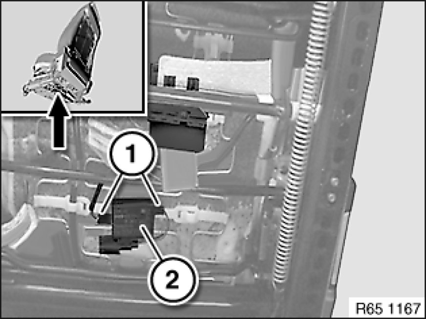

Removing and Installing/Replacing Control Electronics for Passenger Seat Occupancy Detector
65 77 560 - Removing and installing/replacing control electronics for passenger seat occupancy detector

Necessary preliminary tasks:
- Move seat into most upward position
- Unlock and remove first aid kit under passenger seat

Note:
Seat removed for purposes of clarity.
Turn control electronics for passenger seat occupancy detector (2) approx. 45° in direction of arrow and unclip from seat frame.
Disconnect plug connections (1) and remove control electronics for passenger seat occupancy detector (3).